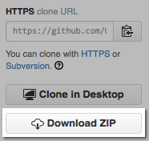

This Getting Started Guide walks you through the fundamental concepts you need to learn as you start using SaltStack. We'll explain how to:
Learning SaltStack is a hands-on experience. While you can get the hang of things by reading this guide, SaltStack is easy to set up and we've included several examples you can run to help you learn. Plus, you can keep your demo environment around after you finish to continue to try things out.
Complete these instructions to set up a simple SaltStack environment.
Download https://github.com/UtahDave/salt-vagrant-demo. You can use git or download a zip of the project directly from GitHub:

Extract the zip file you downloaded, and then open a command prompt to the extracted folder:
cd %homepath%\Downloads\salt-vagrant-demo-master
cd ~/Downloads/salt-vagrant-demo-master
vagrant up
After Vagrant ups (~10 minutes) and you are back at the command prompt, click Next.